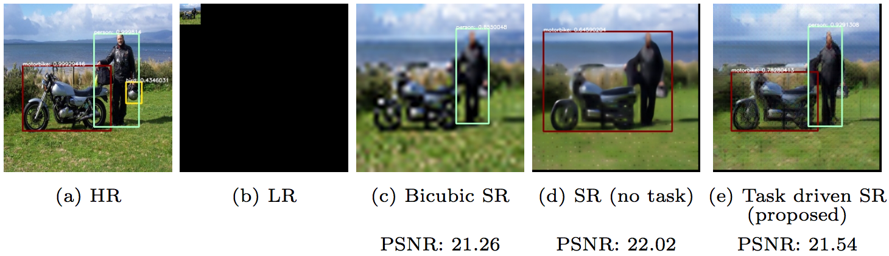

Task-Driven Super-Resolution
Muhammad Haris,
Greg Shakhnarovich,
Norimichi Ukita

Abstract
We consider how image super resolution (SR) can contribute to an object detection task in low-resolution images. Intuitively, SR gives a positive impact on the object detection task. While several previous works demonstrated that this intuition is correct, SR and detector are optimized independently in these works. This paper proposes a novel framework to train a deep neural network where the SR sub-network explicitly incorporates a detection loss in its training objective, via a tradeoff with a traditional detection loss. This end-to-end training procedure allows us to train SR preprocessing for any differentiable detector. We demonstrate that our task-driven SR consistently and significantly improves accuracy of an object detector on low-resolution images for a variety of conditions and scaling factors.
Manuscript
Code
- Available upon publication
Citation
Muhammad Haris, Greg Shakhnarovich, and Norimichi Ukita. "Task-Driven Super Resolution: Object Detection in Low-resolution Images." arXiv preprint arXiv:1803.11316 (2018).